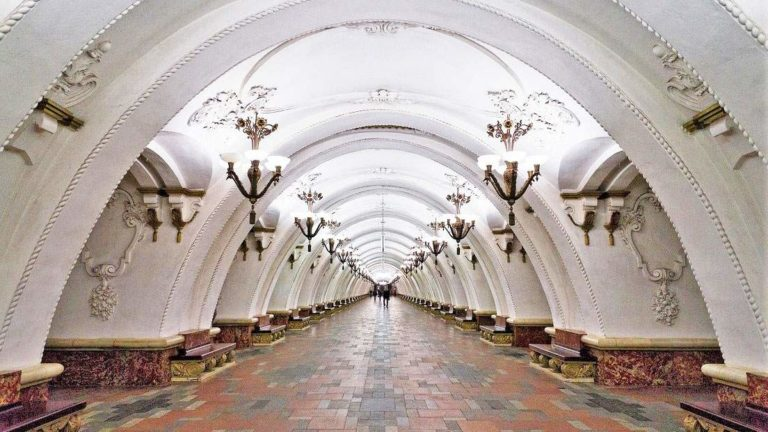
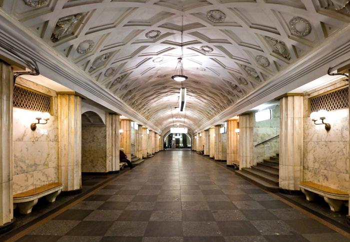

Moscow metro station ArbatskayaMoscow metro station Kievskaya (Circle Line)Moscow metro station KomsomolskayaMoscow metro station KrasnopresnenskayaMoscow metro station MayakovskayaMoscow metro station NovoslobodskayaMoscow metro station Park Kul'turiMoscow metro station Plowad' RevoluziiMoscow metro station Prospekt MiraMoscow metro station Slavyanskii Bul'var

Moscow metro station Teatral'nayaMoscow metro station Vorob'evi Gory